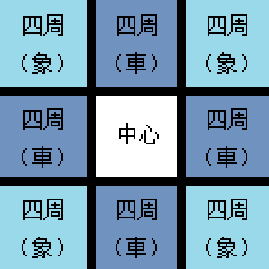

层
对于（主世界）生物群系的获取，Minecraft代码是使用一种类似于Decorator模式的方式提供生物群系的信息的。换句话说，它就像流水线一样，每个环节都对当前生物群系进行一次处理。
——ustc-zzzz《答知乎提问：Minecraft 的地形生成算法是什么？》
层（Layer） 是生成生物群系的重要工具。
世界好比一块画布，“层‘就是画布上涂刷的一层层的颜料。最后得到的画作便是每一层颜料共同作用的结果。
在这里，我们说的层，不仅仅是层本身，还是本层内容和上一层内容的混合方式。不难看出，每一层都可以描述为一个函数，从上一层的像素映射到本层的像素。
像素是图片的最小单位，而生物群系生成的最小单位是区元。所以本文介绍的层是上一层区元到本层区元的生物群系的映射。
层的历史回顾
层的历史，主要是两个阶段。本文介绍的是 1.13+ 的层的内容。
1.12-
层主要以数组形式存储。
层会不断在上一层的数组上修改，如果是放大化操作，就会导致 3/4 的数据直接丢失。
即对于 n 个区块，每个区块有 m 层，则共求值 n * m 次，即每层求值次数相同。
1.13+
层主要以哈希表的形式存储
每一层根据上一层的表延时计算。
越靠近原始层的层求值次数越少。
层的特点
元
我们可以大致把层分为三种：原始层、一元层、二元层。
原始层就是画布最初的样子。可以被描述为
OriginLayer: (x: int, z: int) -> Biome
一元层就是在现有层的基础上再加一层。可以被描述为
UnaryLayer: (x: int, z: int, parent: Layer) -> Biome
二元层能合并两个画布上的内容，可以认为是两个层的叠加。可以被描述为
BinaryLayer: (x: int, z: int, mother: Layer, father: Layer) -> Biome
注意到，所有层都有x, z这样的二元组来表示 x 和 z 相同的 16 个区元。
远亲不如近邻
一个区元的生物群系，往往与周围的区元的生物群系有关。层为了处理周围的生物群系，往往也需要周围的生物群系作为参考。我们大致可以把这样的参考关系分为三种：
普通层：不参考附近的生物群系
車层：参考东南西北四个方向的区元的生物群系
象层：参考东北、西北、东南、西南四个方向的区元的生物群系。
下文会用四周（車）和四周（象）来区分这后两种情况。

三条线
主世界的生物群系就是用上面介绍的层生成的。根据层层叠加的关系，可以分为三条线，我把他们取名为main（主线）、river（河流支线） 和 ocean（海洋支线）。这三条线最后经过合并得到最后的一个层。
这里简述一下支线的大致情况：海洋支线极为简单，在创建之后简单处理后便直接与主线合并。而河流支线复杂绵长，且不仅最终层被合并到了主线，中间层也被主线用作参考，不过好在河流支线并没有反过来参考主线。
在每一段解释的前面都配有一张或者几张对应的图，图中的像素的颜色代表不同的含义，除了主线的最后一张经过打磨之后可以精确到每一个方块，每一张图的色块其实都是由 4 x 4 的像素组成的，代表了一个区元里的 16 个方块。所有图的大小都是 1600 x 900 也就是 400 x 225 个区元。所有的图都遵循着上北下南左西右东的原则。